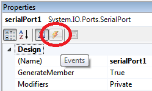

Seleccione el control SerialPort y haga click en el botón Events de la ventana de propiedades.

Acceda al evento DataReceived para programar las acciones que realizará el control al recibir datos (Doble Click en el espacio en blanco al frente de DataReceived).